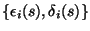
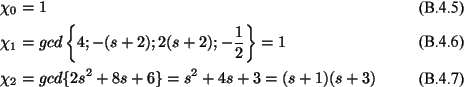

|
You are here : Control System Design - Index | Book Contents | Appendix B | Section B.4 B. Smith-McMillan FormsB.4 Smith-McMillan form for rational matricesA straightforward application of Theorem B.1 leads to the following result, which gives a diagonal form for rational transfer function matrix: Theorem B.2 (Smith-McMillan
form) Let
G(s) = [Gik(s)]
be an
where
where 
is a pair of monic and coprime polynomials for
Proof We write the transfer function matrix as in (B.4.1). We then perform the algorithm outlined in Theorem B.1 to convertWe use the symbol GSM(s) to denote , which is the Smith-McMillan form of the matrix transfer function G(s). We illustrate the formula of the Smith-McMillan form by a simple example: Example 1.1 Consider the following transfer function matrix
We can then express G(s) in the form (B.4.1), i.e.
The polynomial matrix
 This leads to
From here the Smith-McMillan form can be computed to yield
|